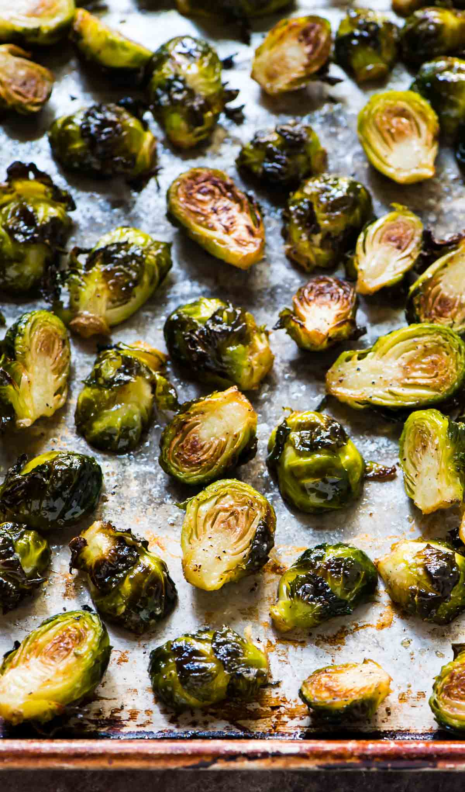

Roasted Brussels Sprouts

Roasted brussel sprouts are easy to prepare and loved by everyone, even veggie haters!
Ingredients
- 1 1/2 lbs - Brussels Sprouts
- 3 Tbsp - Olive Oil
- 3/4 tsp - Kosher Salt
- 1/2 tsp - Ground Black Pepper
Steps
- Preheat oven to 400 degrees F
- Wash and cut off the brown ends of the Brussels sprouts and pull off any yellow outer leaves
- Mix them in a bowl with the olive oil, salt and pepper. Place on baking sheet in a single layer
- Roast for 35 to 40 minutes, until crisp on the outside and tender on the inside. Shake the pan from time to time to brown the sprouts evenly. Sprinkle with more kosher salt ( I like these salty like French fries), and serve immediately